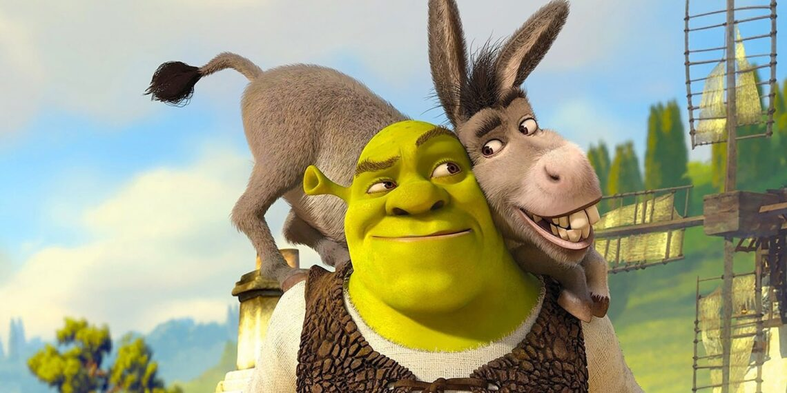

Shrek 5 ganha teaser e confirma Zendaya no elenco
Publicado em: 26 de fevereiro de 2025
A DreamWorks finalmente divulgou o primeiro teaser de Shrek 5, o aguardado próximo capítulo da franquia que conquistou fãs em todo o mundo. O teaser, que já está disponível nas redes sociais, traz cenas emocionantes e confirma a participação da estrela Zendaya no elenco.
Zendaya interpretará uma nova personagem chamada Lila, uma fada rebelde que se junta a Shrek e seus amigos em uma nova aventura no Pântano. A atriz, conhecida por seus papéis em Euphoria e Homem-Aranha, trouxe seu charme único para o filme.
O diretor Chris Miller comentou sobre a escolha de Zendaya: "Ela traz uma energia incrível para o filme. Lila é uma personagem forte e divertida, e Zendaya foi a escolha perfeita para interpretá-la."
Além disso, o teaser revela que Mike Myers, Eddie Murphy e Cameron Diaz retornam para reprisar seus papéis como Shrek, Burro e Fiona, respectivamente. A animação promete trazer de volta o humor característico da série, com muitas referências culturais e momentos emocionantes.
Shrek 5 está programado para estrear nos cinemas em 2026. Enquanto isso, os fãs já podem assistir ao teaser e especular sobre o que está por vir.